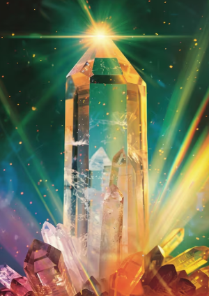

每個人出生的那一刻,天地五行的配比就已經寫定。有人木旺缺金,有人身弱需印。 我們以正統四柱排盤推算您的五行力量與喜用神,再從 32 種天然礦石中,為您配出真正相應的那一串。

填入公曆生日與時辰。系統以太陽視黃經定節氣,立春換年、節令換月,並可開啟真太陽時修正(經度時差 + 均時差),排出精確四柱。
計算天干與地支藏干的加權力量,判斷日主強弱。身強者宜剋洩耗、身弱者宜生扶,再參酌冬夏調候,推導出您的喜用神與忌神。
依喜用神優先序推薦相應五行的天然礦石,可加購深度批命報告、專屬設計搭配、開光加持與禮盒精裝,完成一串真正屬於您的水晶。
五行不是迷信,而是古人描述能量狀態的模型。理解自己的偏性,才知道該補什麼。